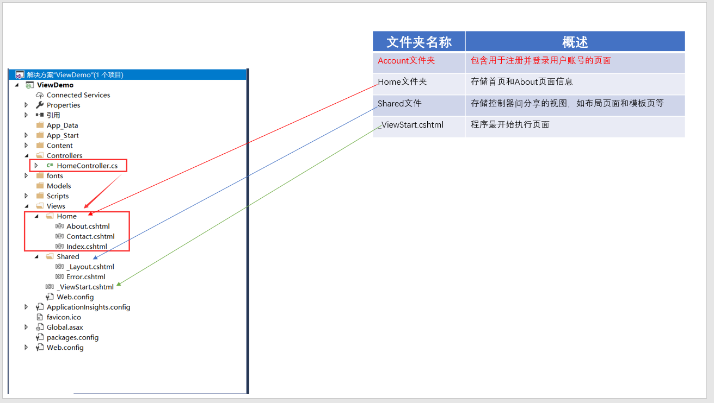

【ASP.NET系列】详解Views
描述
本片文章内容属于ASP.NET MVC系列视图篇，主要讲解View，大致内容如下：
1.Views文件夹讲解
2.View种类
3.Razor语法
4.对视图的基本操作
一 Views文件夹
（一） Views文件夹下常用文件种类
分析：
1.ASP.NET MVC页面基本被放在Views文件夹下；
2.利用APS.NET MVC模板生成框架，Views文件夹下的默认页面为.cshtml页面；
3.ASP.NET MVC默认页面为Razor格式的页面，因此默认页面为.cshtml页面；
4.ASP.NET MVC中，支持WebForm页面，即.aspx页面；
5.ASP.NET MVC中，支持静态html页面；
（二） 默认Views文件夹包含内容

分析：
1.这里没添加Account控制器；
2).默认约定：在Controllers新增一个控制器，就会默认地在Views文件夹下新增一个视图问价，用来存放该控制器添加的视图，如上图中增加Home控制器，
在Views下就自动新增加Home文件，用来存放是Home控制器视图；
二 视图种类
（一） 起始视图——_ViewStart.cshtml
分析：
1.打开_ViewStart.cshtml文件，我们发现该文件是引用Shared文件夹下的_Layout.cshtml文件，_Layout.cshtml是什么文件？布局页，稍后将分析；
2.我们来做如下动作
(1)将_ViewStart.cshtml内容注释掉，且添加一个div内容
(2)添加控制器_ViewStartDemoController和Index.cshtml视图
(3)运行程序，访问视图：http://localhost:2016/_ViewStartDemo/Index
分析：
查看html
（二）布局视图
如上，我们分析了_VeiwStart.cshtml文件，我们发现里面有一段代码
1 2 3 | @{ Layout = "~/Views/Shared/_Layout.cshtml";} |
不理解这局话不要紧，它采用的Razor语法格式，将稍后与大家分享Razor，但我们看到了_Layout.cshtml文件，该文件即是Views文件夹下，Shared文件夹下的_Layout.cshtml视图
1.查看_Layout.cshtml视图
分析：
(1)_Layout.cshtml基本结构就是HTML基本结构(其实，.aspx和.cshtml结构，均是html结构);
(2)我们发现在<body></body>区域，有两个后台代码：@RenderBody()和@RenderSection()。@RenderBody()表示视图体，@RenderSection()表示部分视图和节点；
(3)我们将程序运行起来，看看
分析：
(1)我们发现最终呈现的页面由两部分组成：Layout.cshtml页面(由_ViewStart.cshtml页面引用_Layout.cshtml页面实现)和Home控制器下的Index页面;
(2)_Layout.cshtml到底是什么？布局页，相当于WebForm的模板页面；
(3)下面我们来定义一个模板页
（三）强类型视图
何为“强类型视图”？Controller向View传递少量数据，一般情况，我们可以归为两大类别：弱类别传递（ViewBag，ViewData，TempData）和强类别传递（强类型视图）。然而，在实际操作中，当涉及大量数据时，
弱类别就显得不是那么方便，此时，一般采用强类型视图。强类型视图一般由三部分构成，即控制器层，视图层和模型层，三者之间调用关系可表示为：
1.创建一个强类型视图
(1)在Model文件夹添加一个UserInfo类
1 2 3 4 5 | public class UserInfo { string UserName { get; set; } string UserAddress { get; set; } } |
(2)在控制器PartialViewDemo中添加一个方法QiangLeiXing()，并添加视图
(3)强类型视图分析
使用强类型视图，从控制器向视图传递一个在两端都是强类型的模型对象，从那个人获得智能感知、编译检查等好处。在Controller方法中，可以通过向重载的View方法中传递模型实例来指定模型。
1 2 3 4 5 6 7 8 9 10 | public ActionResult QiangLeiXingView() { List<UserInfo> List_UserInfo = new List<UserInfo>(); for (int i = 0; i < 2; i++) { List_UserInfo.Add(new UserInfo() { UserName = "Alan_beijing" + i, UserAddress = "上海" + (i++) }); } ViewBag.List_UserInfo = List_UserInfo; return View(List_UserInfo); } |
下一步是告知视图哪种类型的模型正在使用@model声明。注意，这里需要输入模型的完全限定名(名称空间和类型名称)
1 | @model IEnumerable<ViewDemo.Models.UserInfo> |
对应View
1 2 3 4 5 6 7 8 9 10 11 12 13 14 15 16 17 18 19 20 21 22 23 24 25 26 | @model IEnumerable<ViewDemo.Models.UserInfo>@{ Layout = null;}<!DOCTYPE html><html><head> <meta name="viewport" content="width=device-width" /> <title>QiangLeiXingView</title></head><body> <div> <ul> @foreach(ViewDemo.Models.UserInfo V_UserInfo in Model) { @V_UserInfo.UserName @V_UserInfo.UserAddress <br/> } </ul> </div></body></html> |
当然你也可以采用如下限定
1 2 | @using ViewDemo.Models@model IEnumerable<UserInfo> |
对应的View
1 2 3 4 5 6 7 8 9 10 11 12 13 14 15 16 17 18 19 20 21 22 23 24 25 26 27 | @using ViewDemo.Models@model IEnumerable<UserInfo>@{ Layout = null;}<!DOCTYPE html><html><head> <meta name="viewport" content="width=device-width" /> <title>QiangLeiXingView</title></head><body> <div> <ul> @foreach(UserInfo V_UserInfo in Model) { @V_UserInfo.UserName @V_UserInfo.UserAddress <br/> } </ul> </div></body></html> |
2.关于Controller和View之间传值，请参考我的另一篇文章：【ASP.NET MVC】View与Controller之间传递数据
由于本篇文章关于页面之间传值讲得比较详细，因此这里就不分析了。
3.我们来分析一下，为什么使用弱型别来传递不是很方便的原因
关于这个例子，只举例ViewBag(ViewData和TempData差不多原理)
(1)在控制器PartialViewDemo中添加方法
1 2 3 4 5 6 7 8 9 10 11 12 13 14 | /// <summary> /// 弱类型视图，使用ViewBag来传递数据 /// </summary> /// <returns></returns> public ActionResult RuoLeiXingView() { List<UserInfo> List_UserInfo = new List<UserInfo>(); for (int i = 0; i < 2; i++) { List_UserInfo.Add(new UserInfo() { UserName = "Alan_beijing" + i, UserAddress = "上海" }); } ViewBag.List_UserInfo = List_UserInfo; return View(); } |
(2)在视图中接收数据
1 2 3 4 5 6 7 8 9 10 11 12 13 14 15 16 17 18 19 20 21 22 | @{ Layout = null;}<!DOCTYPE html><html><head> <meta name="viewport" content="width=device-width" /> <title>RuoLeiXingView</title></head><body> <div> @foreach(ViewDemo.Models.UserInfo V_UserInfo in (ViewBag.List_UserInfo as IEnumerable<ViewDemo.Models.UserInfo>)) { @V_UserInfo.UserName @V_UserInfo.UserAddress <br /> } </div></body></html> |
我们发现在枚举之前，需要将动态的ViewBag.List_UserInf 转化为IEnumerable<UserInfo>类型，比较麻烦，当然，你可以使用Dynamic代替
1 2 3 4 5 6 7 8 9 10 11 12 13 14 15 16 17 18 | <!DOCTYPE html><html><head> <meta name="viewport" content="width=device-width" /> <title>RuoLeiXingView</title></head><body> <div> @foreach(dynamic D_UserInfo in ViewBag.List_UserInfo) { @D_UserInfo.UserName @D_UserInfo.UserAddress <br /> } </div></body></html> |
使用Dynamic似乎方便了许多，但细心的你可能已经发现，变量没有了智能感应功能。
到此，大家应该明白了ViewBag的不方便性了，当然，细心的你又会发现，强类型视图，刚好具备如上两个优势。
（四）部分视图
何为“分布视图”？在WebForm开发中，我们经常用到用户自定义控件，其作用是提高代码的复用性，减少代码的冗余，使程序更加模块化，那么，在ASP.NET MVC中，对应地引入了基于Razor结构的分布页，其作用与
WebForm开发中的用户自定义控件差不多。
1. 创建分布页
我们在/Views/Shared文件夹下创建一个分布页_PartialPageDemo.cshtml，并向该页面中添加一段代码：
1 | <h1 style="color:red">我是分布页</h1> |
创建过程如下:
2.调用分布页
(1) 添加控制器PartialViewDemo和视图Index.cshtml
(2)在Index.cshtml页面中调用_PartialPageDemo.cshtml
3.调用分布页的几种方式
方式一：
1 | @Html.Partial() |
方式二：
1 | @Html.Action() |
方式三：
通过Ajax方式调用；
三 Razor语法
Razor视图引擎是ASP.NET MVC3中新扩展的内容，并且也是他的默认视图引擎，其设计理念是：简单直观。Razor视图引擎可分为MVC和WebForm视图引擎，基于篇幅限制，本文只分析MVC Razor视图引擎。Razor中的核心转
换符"@",代表：标记-代码或代码-标记的意思。一般有两种基本转换，即代码表达式和代码块。
（一）代码表达式
1.支持隐式代码表达式求解
这个特性，在强类型视图中，体现得很明显。
1 2 3 4 5 6 7 8 9 10 | <div> <ul> @foreach(UserInfo V_UserInfo in Model) { @V_UserInfo.UserName @V_UserInfo.UserAddress <br/> } </ul> </div> |
2.支持显示代码表达式
1 | <div>1+2=@(1+2)<div> |
3.Razor十分智能，可以知道表达后面的空格字符不是一个有效的标识符，所以它可以顺畅地转回到标记语言。
4.自动识别邮件格式
会自动识别邮件，而并不是当作变量。
1 | <div>@www.qq.com</div> |
5.支持文本量
1 2 3 4 5 | @{ string BlogName="Alan_beijing"; }<div>@BlogName.Views</div> |
这段代码回提示错误，提示string没有Views属性。
其实我们想要输出的结果：Alan_beijing.Views，但@BlogName.Views ，View被解析为BlogName的一个属性，因此出错，此时，应用字面量
1 2 3 4 5 | @{ string BlogName="Alan_beijing"; }<div>@(BlogName).Views</div> |
6.支持转义字符
如我想输出:@Alan_beijing
1 | <div>@@Alan_beijing</div> |
（二）支持HTML编码
我们知道，在防止XSS攻击时了(跨站脚本注入攻击) ，首先要做到HTML编码，Razor刚好是HTML编码的。
1 2 3 4 5 6 | @{ string message="<script>alert('haacked!')</script>";}<span>@message<span> |
这段代码不会弹出警告框而只会呈现编码的HTML
1 | <span>&alt;script>alert('haacked!');&alt;/script></span> |
这里不论述这个，后在【ASP.NET MVC系列】的后续篇幅中，专门讲解。
(三) 代码块
这个大家应该用的比较多，foreach
1 2 3 4 5 6 7 8 9 10 | <div> <ul> @foreach(UserInfo V_UserInfo in Model) { @V_UserInfo.UserName @V_UserInfo.UserAddress <br/> } </ul> </div> |
四 对视图的基本操作
ASP.NET MVC 提供的模板中，当创建View时，提供了六种模型，分别为Create,Delete,Detail,Edit,Empty,Empty(不具有模型),List。基于该模型，我们可以轻松地创建具体实体的增删改查。由于比较简单，本例只
简单结合UserInfo实体演示Create，其他操作，请读者自行操作，原理思路一样，这里不一 一论述。

我们创建一个基础UserInfo实体的Create
测试结果
四 参考文献
【01】【01】ASP.NET MVC5 高级编程(Jon Galloway,Brad Wilson,K.Scott Allen,David Matson ,孙远帅 译)
【02】APS.NET MVC4
五 版权区
- 感谢您的阅读，若有不足之处，欢迎指教，共同学习、共同进步。
- 博主网址：http://www.cnblogs.com/wangjiming/。
- 极少部分文章利用读书、参考、引用、抄袭、复制和粘贴等多种方式整合而成的，大部分为原创。
- 如您喜欢，麻烦推荐一下；如您有新想法，欢迎提出，邮箱：2016177728@qq.com。
- 可以转载该博客，但必须著名博客来源。

昵称：
退出 订阅评论
[Ctrl+Enter快捷键提交]
· 被清屏的今日头条，只因跑得太快
· 育碧开源“冲突世界”的在线后端服务器 Massgate
· Netcraft12月Web服务器排名，微软连续暴跌近20%
· 存活率不足一成，92%的开源区块链项目已不再活跃
· 图解：贾跃亭出走180天 他和乐视都经历了什么？
» 更多新闻...
· 以操作系统的角度述说线程与进程
· 软件测试转型之路
· 门内门外看招聘
· 大道至简，职场上做人做事做管理